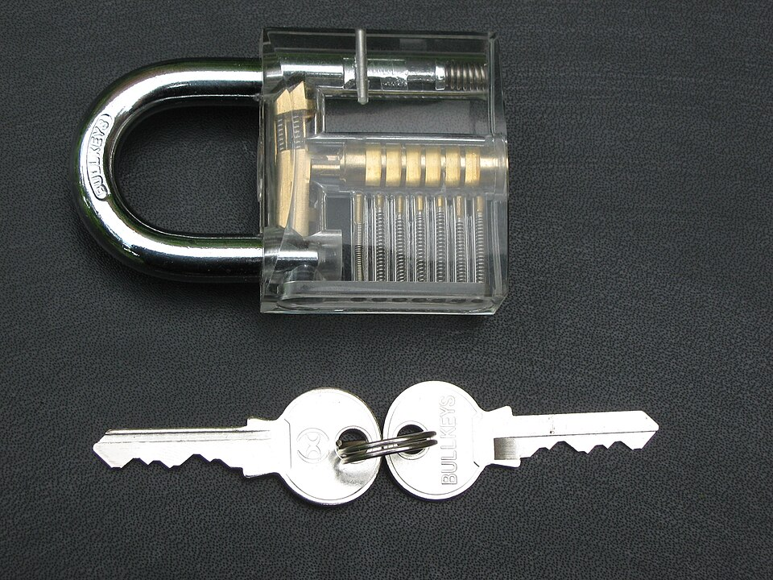

Módulo 04 — Permisos y Propiedad
Modelo de permisos Unix

Cada archivo tiene 3 conjuntos de permisos (read, write, execute) para 3 categorías:
| Categoría | Símbolo | Significado |
|---|---|---|
| User (owner) | u | El dueño del archivo |
| Group | g | Miembros del grupo del archivo |
| Others | o | Todos los demás |
Y a (all) abarca los tres.
Lectura de ls -l
-rwxr-xr-- 1 ana devs 1234 Mar 15 10:30 script.sh-tipo de archivo (-regular,ddirectorio,lsymlink)rwxpermisos del user (dueño)r-xpermisos del grupor--permisos de others1número de hard linksanadueñodevsgrupo1234tamaño en bytes- fecha de modificación y nombre
| Permiso | Archivo regular | Directorio |
|---|---|---|
r | Leer contenido | Listar contenido (ls) |
w | Modificar contenido | Crear/eliminar archivos dentro |
x | Ejecutar | Entrar (cd) y acceder a archivos |
w y x en el directorio que lo contiene, no en el archivo.Notación octal
Cada permiso es un bit:
r = 4w = 2x = 1
Se suman por categoría:
| Octal | Binario | Permisos |
|---|---|---|
7 | 111 | rwx |
6 | 110 | rw- |
5 | 101 | r-x |
4 | 100 | r-- |
0 | 000 | --- |
Ejemplos comunes:
| Octal | Permisos | Uso típico |
|---|---|---|
755 | rwxr-xr-x | Scripts ejecutables, directorios |
644 | rw-r--r-- | Archivos de texto, código |
600 | rw------- | Llaves SSH, configs sensibles |
700 | rwx------ | Directorios privados |
777 | rwxrwxrwx | Casi nunca correcto |
chmod — cambiar permisos
Notación octal
chmod 755 script.sh
chmod 644 archivo.txt
chmod -R 755 carpeta/Notación simbólica
chmod u+x script.sh
chmod u-w archivo
chmod g+rw archivo
chmod o-r archivo
chmod a+x script.sh
chmod ug=rw,o=r archivo| Operador | Acción |
|---|---|
+ | Agregar |
- | Quitar |
= | Asignar exacto |
chown — cambiar dueño
sudo chown ana archivo
sudo chown ana:devs archivo
sudo chown :devs archivo
sudo chown -R ana:devs carpeta/umask — permisos default
umask define qué permisos se quitan a archivos nuevos. Default típico:
umask | Archivos | Directorios |
|---|---|---|
022 | 644 | 755 |
027 | 640 | 750 |
077 | 600 | 700 |
umask
umask 022Permisos especiales
setuid (s en user)
El proceso corre con permisos del dueño del archivo, no del que lo ejecuta. Ejemplo: /usr/bin/passwd tiene setuid root para escribir en /etc/shadow.
chmod u+s archivo
chmod 4755 archivosetgid (s en group)
En directorios, archivos creados heredan el grupo del directorio:
chmod g+s carpeta_compartida
chmod 2755 carpetasticky bit (t en others)
En directorios, solo el dueño del archivo puede eliminarlo. Lo usa /tmp:
chmod +t carpeta
chmod 1777 carpetaACL — control fino
getfacl archivo
setfacl -m u:luis:rw archivo
setfacl -m g:devs:r archivo
setfacl -x u:luis archivo
setfacl -b archivo
setfacl -d -m u:luis:rwx carpetals -l muestra + al final cuando hay ACL extra.
Atributos extendidos — chattr
sudo chattr +i archivo
sudo chattr +a log.txt
sudo chattr -i archivo
lsattr archivoCasos típicos
Script ejecutable
chmod +x script.sh
./script.shLlaves SSH
chmod 600 ~/.ssh/id_rsa
chmod 644 ~/.ssh/id_rsa.pub
chmod 700 ~/.sshCarpeta compartida por equipo
sudo mkdir /srv/proyecto
sudo chgrp devs /srv/proyecto
sudo chmod 2775 /srv/proyectosudo y root
sudo comando
sudo -i
sudo -u ana comandoEditar /etc/sudoers con visudo.
Errores típicos con permisos
chmod 777 como "solución" a un Permission denied. Funciona, sí — igual que sacar la puerta soluciona el problema de la llave. 777 le da lectura, escritura y ejecución a cualquier usuario del sistema, incluido el proceso comprometido de mañana. En un directorio web es la receta para que te suban un script y lo ejecuten.# ❌ mal
sudo chmod -R 777 /var/www/html
# ✅ bien — el problema casi nunca es el permiso, es el dueño
sudo chown -R www-data:www-data /var/www/html
sudo find /var/www/html -type d -exec chmod 755 {} \;
sudo find /var/www/html -type f -exec chmod 644 {} \;chmod -R 644 sobre un directorio. Les saca el x a los directorios, y sin x no se puede entrar: cd falla, ls falla y todo lo de adentro queda inaccesible aunque los archivos estén perfectos. Para eso existe la X mayúscula: aplica el x solo a directorios (y a lo que ya era ejecutable).# ❌ mal — te dejás afuera de tus propias carpetas
chmod -R 644 proyecto/
# ✅ bien — 644 a los archivos y 755 a los directorios, en un solo comando
chmod -R u=rwX,go=rX proyecto/chmod -R sobre tu home. Barre con los permisos restrictivos que algunos programas exigen: SSH rechaza una clave privada que sea legible por otros, y GnuPG hace lo mismo con su directorio. Después el error dice "UNPROTECTED PRIVATE KEY FILE" y no "vos hiciste chmod -R".# ❌ mal
chmod -R 755 ~
# ✅ bien — dejá que esas carpetas conserven sus permisos propios
chmod 700 ~/.ssh
chmod 600 ~/.ssh/id_ed25519
chmod 644 ~/.ssh/id_ed25519.pub
chmod 600 ~/.ssh/authorized_keyschmod u+s mi-script.sh no hace nada: Linux ignora el bit setuid en scripts a propósito, porque entre que el kernel lee el #! y el intérprete abre el archivo hay una ventana explotable. El bit queda puesto, dando la falsa sensación de que algo se configuró.# ❌ mal — el bit se pone, pero el script NO corre como root
sudo chmod u+s /usr/local/bin/deploy.sh
# ✅ bien — permiso explícito y acotado vía sudoers (editado con visudo)
# ana ALL=(root) NOPASSWD: /usr/local/bin/deploy.sh
sudo visudo -f /etc/sudoers.d/deployCheckpoint — ¿lo tenés claro?
¿Por qué podés borrar un archivo sobre el que no tenés permiso de escritura?
Porque borrar no es modificar el archivo: es sacar su nombre de la lista del directorio. Lo que manda entonces son los permisos del directorio que lo contiene (w para modificar esa lista y x para atravesarlo), no los del archivo. Por eso, en una carpeta tuya, podés borrar un archivo de root que dice r--r--r--. Y por eso /tmp, donde todos escriben, necesita el sticky bit: sin él, cualquiera podría borrar los temporales de cualquiera.
¿Qué diferencia hay entre chmod 644 y umask 022?
chmod fija los permisos de algo que ya existe. umask es una máscara que resta permisos en el momento de crear algo nuevo, y no toca nada de lo existente. Con umask 022, un archivo que nacería 666 queda en 644 y un directorio que nacería 777 queda en 755. Fijate que los archivos nunca nacen ejecutables: ese x se lo ponés vos a mano con chmod +x, la umask no lo puede agregar porque solo sabe quitar.
Si vos no podés leer /etc/shadow, ¿cómo hace passwd para cambiar tu contraseña ahí adentro?
Con setuid. /usr/bin/passwd tiene el bit s en el dueño (-rwsr-xr-x root root), así que cuando vos lo ejecutás el proceso corre con los privilegios de root, no con los tuyos. Es la manera de darle a un usuario común una capacidad puntual sin darle root entero: el programa hace exactamente una cosa y la hace con cuidado. Por eso los binarios setuid son un objetivo clásico de ataque — cualquier bug adentro se ejecuta como root. Listá los que tenés con find /usr/bin -perm -4000.
Ejercicios
- Crear
hola.shconecho "hola", hacerlo ejecutable - Dar permisos
640con notación octal y luego simbólica - Crear carpeta compartida con setgid para un grupo
- Verificar permisos de tus llaves SSH
- Probar
chattr +iy verificar que nisudo rmlo elimina
🧠 Autoevaluación rápida
Respondé sin mirar arriba. Cada pregunta te explica el porqué.
1. chmod 755 script.sh deja los permisos en…
r=4, w=2, x=1: el 7 es rwx para el dueño y los dos 5 son r-x para grupo y others. 644 da rw-r--r-- y 700 da rwx------.2. ¿Qué permiso necesitás sobre un directorio para poder entrar con cd?
x es "atravesar/entrar y acceder a lo de adentro", r te deja listar con ls y w crear o borrar archivos dentro.3. El sticky bit (chmod +t, el que usa /tmp) sirve para…
/tmp es 1777. Correr con permisos del dueño es setuid (chmod u+s, como /usr/bin/passwd) y heredar el grupo es setgid (chmod g+s).